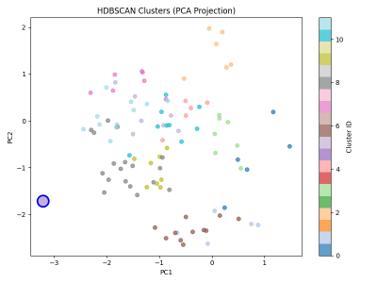
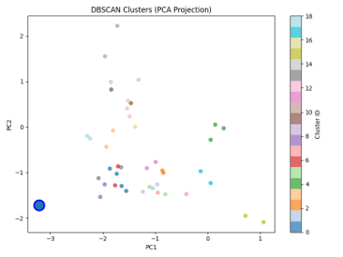

This project investigates unsupervised clustering techniques for identifying Earth-like exoplanets based on atmospheric gas composition. We compare two density-based clustering algorithms: DBSCAN and HDBSCAN.
The dataset contains simulated planetary atmospheric compositions with 12 chemical features: H₂O, CO₂, O₂, N₂, CH₄, N₂O, CO, O₃, SO₂, NH₃, C₂H₆, and NO₂. Earth was added as a reference vector for comparison.


HDBSCAN significantly improved clustering performance by:
Overall, HDBSCAN produced more physically meaningful clusters for planetary classification.
Earth was assigned to the nearest cluster using a nearest-neighbor approach after clustering. This allows identification of Earth-like planetary groups.
Density-based clustering is effective for analyzing planetary atmospheric similarity. Among the two methods tested, HDBSCAN outperformed DBSCAN in stability and interpretability, making it more suitable for exoplanet similarity detection tasks.